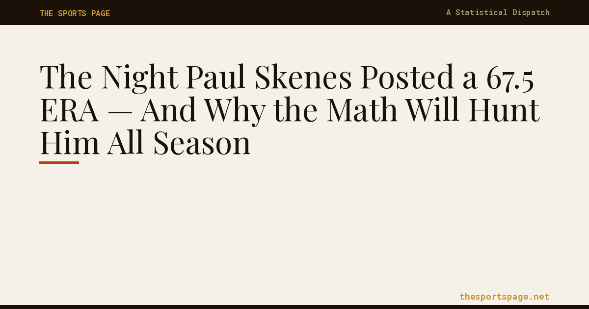
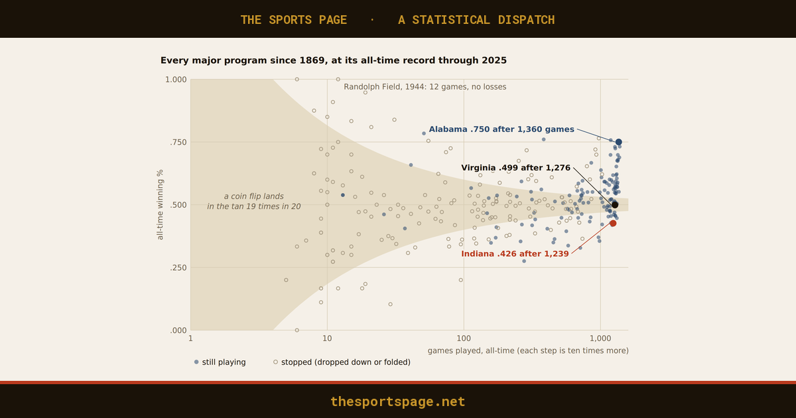
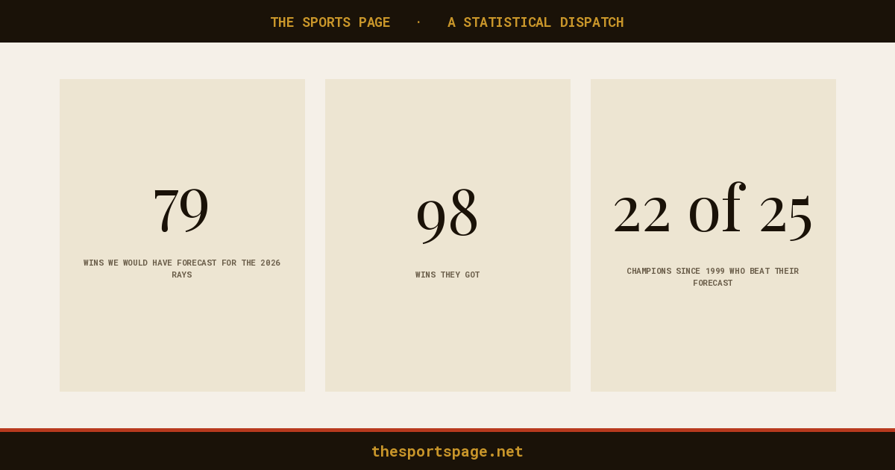
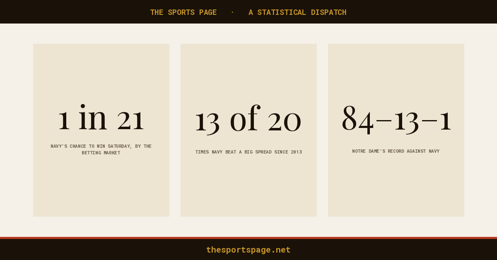

The Sports Page's first talk · George Mason University
The Water Cooler Is the Classroom
This is the first talk anyone has given about The Sports Page, at George Mason University on November 4, 2026. The argument takes three points: the way we teach statistics keeps getting the same results; so take it to the people, story first and statistics second; and make the uncertainty something they can act on. Every slide is here, with what I said beneath it. The backup slides at the end show the paper up close: how it is built, the logic underneath it, and the people who keep it honest.
The tension: the people who need statistics most never learn it
George Mason University · November 4, 2026
The Water Cooler Is the Classroom
Patrick McKnight · Associate Professor of Psychology · Editor, The Sports Page
thesportspage.net
“That was the worst class I ever took.”
Every party. One Jonathan.
What I said I have taught statistics for a long time. Every time it comes up, at a party or in passing, I get the same look: people stare right through me and say, that was the worst class I ever took. Pretty much everybody says it. Then I met Jonathan, who said, oh yeah, me too, I love stats. I said, what? That's unusual. He is the gold dot. And it is not a survey; it's a lifetime of parties.
Need it
Learned it
Use it
Everybody loses
How do you serve what people have already decided they hate?
Bring it to the water cooler.
What I said We have been teaching math and statistics and logic to a great many people. The people who could benefit most from it don't learn it. The people who do learn it may or may not use it. So everybody loses. Here is the question for the next half hour: how do you take something people generally abhor, bring it to them, and get them to eat it, like green eggs and ham, before they turn up their noses and decide it isn't for them? I want to talk stats with the people who love it, and teach stats to the people who need it. My answer, and the bottom line of this talk: bring it to the water cooler. Three points, and then your questions.
1. Same approach, same results
1 of 3
Same approach, same results.
One story
A thousand cases
Base rates ignored.
Anecdotes win.
Numbers feared.
John Allen Paulos, Innumeracy (1988)
What I said If we keep doing what we have been doing, we will keep getting what we have been getting. And we know what that is. People misuse base rates. They are easily persuaded by an anecdote: one vivid story outweighs a thousand cases. And most people are, plainly, innumerate. John Allen Paulos wrote a whole shelf of books about this, starting with Innumeracy in 1988. We have all lived it. The longer I taught, the more amazed I was at how resistant people are to learning these tools. Not my students alone: all of us. Underneath all of it is a distorted lens: fear or disgust or hope finds its own evidence and grows. The fix is to get a number to it before the argument, then talk about belief, then uncertainty.
2. Take it to the people: story first, statistics second
2 of 3
Take it to the people.
The outpost
the professors
The water cooler
everyone else
What I said They are not coming in, so we have to go to them. And I am all in. The outpost is where the professors stand. The water cooler is where everyone else goes to learn about the world: to find somebody to follow, to get an edge, to connect with people, to understand what is going on. Ultimately, to shrink their uncertainty. That is exactly what statistics is for, and they are already looking for it. The usual fixes, more required courses, better textbooks, better teachers, all try to bring the masses to the educators. The alternative is to bring the education to the masses. I am not comparing myself to Gutenberg, but that is the shape of it: put it where people already are, in words they already use. For a big slice of the public, the water cooler is sports.
2 of 3
Make the university the water cooler.
Fractions.
Denominators.
Fallacies.
30°C: hot.
The university
Donald T. Campbell · The Experimenting Society
What I said But here is what I am really doing. I am not just carrying statistics out of the university. I am digging up what a university was supposed to offer in the first place: a place where people come to make sense of things. So flip it. Make the university the water cooler. Bring everybody here, and have them learn the basics because they need them to function. Something as small as answering a few questions on your way to class. Constantly nudging people to grow what they know, out of necessity. And the basics are blocking and tackling: fractions, what the denominator is, the common fallacies. Fluent enough that it is intuitive. If I tell you it is 30 degrees Celsius outside, you should know it is hot, even as an American. Once people have that, they stop getting angry over numbers that can be settled by looking. The emotion goes where it belongs: in the stands, yelling and hoping and dreaming. That is exposure, delivered without people noticing, and we can dial it up and down and measure how we are doing. Don Campbell called that the experimenting society. This is one small version of it.
2 of 3
Story first. Statistics second.
The classroom
Formula
Exercise
Exam
Forgotten
The sports page
A story they love
The number in it
A lesson they keep
What I said Here is the flip. Don't bring people the tools wrapped in calculus and figures they can't read. Start with the figures they already understand: the stories. Then apply the statistics to the story. That makes it real, and it makes the number easy to interpret, because they already know what it is about. One example, quickly.
2 of 3 · One example
I was wrong. Getting raided is a compliment.
Raided (79) Not raided (607)
86
79
75
83
71
69
The big season
Next season
Next three, avg
Wins per 100 · teams after a season of 75% wins or better · 4,269 head-coach seasons, 1969–2024
What I said The story everybody tells: some famous coaches were propped up by their staffs, and when the assistants left, the head coach fell apart. Bowden after Amato and Richt. Dabo after Venables and Elliott. I believed it. Then I applied the statistics to the story. Raided teams do slip the next year; every big season drifts back toward the middle. But compared with teams that had the same big year, raided teams win more over the next three seasons, not fewer. The raid does not make the team good; the team being good brings the raid. I was wrong, and a fan can see why in one picture.
3. Make the uncertainty actionable
3 of 3 · Make it actionable
A better model isn’t always a useful one.
After a big season, how many wins is each forecast off by the next year?
A coin flip (.500)
2.8
Same as last year
2.1
The program’s 10-year average
1.8
Our best model
1.7
Wins missed per 12 games · 421 college seasons of 75%+ wins, 2005–2024, each scored on the next year · model fit on 1980–2004 only
What I said A real case. Take every college football program that had a big season, three wins in four or better, from 2005 on: 421 of them. Before the next season, four forecasts. A coin flip, every team at .500, misses by 2.8 wins a season. The fan's forecast, same as last year, misses by 2.1. The plain base rate, the program's own average over the last ten years, misses by 1.8: better than the fan, because a big year drifts back toward the middle. Our best model, a blend we fit only on 1980 to 2004 so it never saw these seasons, misses by 1.7. That is a tenth of a win better than the base rate. Is that worth building? So ask: how uncertain should you be, and should you be that uncertain? Your uncertainty can shrink as your model gets better, and the model can still be woefully inadequate; even the best one here misses by nearly two wins. Sometimes you are better off just going with the base rate. A tool that quantifies uncertainty is no use if you don't know how to act on it. That is the judgment I want people to carry out of the sports page and into the voting booth, the mortgage office and the doctor's office. That is the order that matters: emotion, then a number, then belief, then uncertainty. And none of it works if the design and the measurement are bad, because the design sets the ceiling on what you can conclude.
Close: take the education to the masses
The masses won’t come to the educators.
So take the education to the masses.
Bring it to the water cooler.
What I said Pull it together. Same approach, same results. Take it to the people, story first, and then make the university the water cooler. Make the uncertainty something they can act on. I want to talk stats with the people who love it, the Jonathans, and teach stats to the people who need it. Then straight to questions.
What argument at your water cooler could a number settle?
thesportspage.net · ideas@thesportspage.net
These slides, and what I said
What I said We closed by taking one argument from the room and framing it live: what is the question, what number would answer it, what would a reasonable person expect, and what would they take home. If you have one, send it. If it is a good one, it becomes an issue, and you get your first name in it.
Backup: the paper, the engine, the logic, the board
Backup
Up close with The Sports Page
The paper, the engine, the logic, and the people.
What I said Backup slides. Use any of them if a question opens the door: what the paper looks like, how it is built, the logic underneath it, and who keeps me honest.
As published
One question a day. 219 so far.

No. 1 · Opening Day

No. 218 · every program since 1869

The Rays: forecast 79, won 98

Navy and the spread
What I said This is what readers actually see, as the cards look in a feed or at the top of the email. One question a day since Opening Day, March 27, 2026: 219 issues as of this morning. The first was Paul Skenes giving up five earned runs in two-thirds of an inning, a 67.5 ERA, and why the denominator makes that number scream. The rest have the same shape: a story people already care about, the number inside it, and what it does and does not tell you.
The engine
A lot of moving parts before anyone says a number.
An argument
Is it worth a day?
Primary feeds only
Model, limits stated
Seven checks
Every score vs two feeds
4:30 a.m. publish
Graded in public Sunday
111 scripts · about 26,000 lines · open to read at thesportspage.net/engine.html
What I said This is why you need knowledge before you talk to people about a number. It starts with an argument somebody actually has. We score it: is the number ours, is it defensible, is it surprising, does the lesson travel outside sport. The data come only from primary feeds: the MLB Stats API, nflverse, CollegeFootballData, ESPN. A web search can point at a fact; it can never be the source of one, because we once printed a poll that did not exist yet. Then the model, with its limits written down. Then seven checks: reading level, voice, the headline, spelling, layout, and every score in the piece checked against two independent feeds by a script. It publishes itself at 4:30 in the morning, and every Sunday we grade our own forecasts in public. The whole engine, including a list of everything that broke, is open to read.
The logic underneath
Don't yell. Get a number to it.
The distorted lens
A feeling: fear, disgust, hope
Look for evidence
Find it. Feel it harder.
↻ and around again
The sports page
Get a number to it
Then talk about belief
Then the uncertainty
What I said This is the logic the whole paper runs on. People view the world through a distorted lens, and the lens perpetuates itself. Whatever the distortion is, fear or disgust or plain hope, it is easy to find supporting evidence, and finding it makes the feeling stronger. So the loop goes around again. The Sports Page takes the emotional state and breaks it down: okay, what is real here? Get a number to it, rather than yelling at each other. Then talk about belief, which is the important part: what did you believe before, and how far should this move you? Then talk about uncertainty: how sure can anyone be? Real case: the Rays were supposed to win 79 games this year, and they won 98. Plenty of people decided early that it was luck and kept finding reasons to think so. The number does not tell you what to feel. It tells you what is settled, so the feeling can go back to the stands where it belongs.
Design before model
Same question. Same data. Two answers.
Jeffery Simmons is 29. How many good seasons does he have left?
COMPARISONS PICKED BY CAREER PRO BOWLS
34
median age at their last season. None were done by 30.
COMPARISONS PICKED ON WHAT WE KNEW AT 28
2.5
starter seasons in the next four. One in five got one or none.
nflverse data, 2013–2025. The design sets the ceiling; the measurement speeds you up or slows you down.
What I said Any statistician worth their weight in spit knows that the design dictates the strength of the inference, and the measurement accelerates or slows it. Plenty of fields ignore both: run the model, hand over the results, let someone else explain them. Here is a real case from this week. The Bears traded two first-round picks for Jeffery Simmons. How many good years does he have left? If you choose comparison players by their career Pro Bowls, you only keep the ones who lasted, because the career is the filter, and you get a rosy answer: they played to 34. Choose them on what was knowable when they were 28, like Simmons now, and the answer is about two and a half starter seasons in the next four, with one in five getting one or none. Same question, same data, opposite stories. The model never changed. The design did.
Practicing what we preach
We were wrong. In public.
WHAT WE PRINTED
Notre Dame–Navy's halftime score, two different ways in one edition. Both wrong.
WHAT WE DID
Corrected it, then built a script that checks every score against two feeds. It found two more already in the archive.
Correction boxes stay on the page. The failure log is at thesportspage.net/engine.html
What I said If I am going to ask people to update their beliefs, I had better show that we update ours. This past Sunday we printed the Notre Dame–Navy halftime score two different ways in the same edition, and both were wrong. We corrected it, and then built a script that checks every score in a piece against two independent feeds before it can publish. The first sweep of the archive found two more mistakes that had already gone out. Every correction stays on the page in a box. Misses are not embarrassing. Hiding them is.
The editorial board
The more you learn, the less expert you feel.
Public relations
Medicine
Finance
Statistics
You
I have been teaching statistics a long time. I still have a lot to learn.
ideas@thesportspage.net
What I said I want to thank the editorial board. I have an expert in public relations, a physician, and an expert in finance, and I have been teaching statistics for a long time. I do not consider myself an expert. Until I have written about something, run the models myself, and published it, I do not feel like one, and the more you learn, the less expert you feel. That is the first dose of reality anyone doing this needs: a big slice of humble pie. A lot of what I believed about what is right in sport turned out to be old-timey ideas once I dug in. So this is an invitation. You know things I do not. Sports is one avenue, and sports could really benefit from statistics. But statistics are a tool that helps anybody who uses them well, and knowingly, which means knowing the limits of quantifying uncertainty. Bring what you know.
Were you there? Pull up a chair.
If you were in the room, or you just found this, I want to hear from you. Send the argument at your water cooler that a number could settle to ideas@thesportspage.net. Tell me what you know that I don't; this paper needs people who know things. And subscribe: one question a day, free, in your inbox.